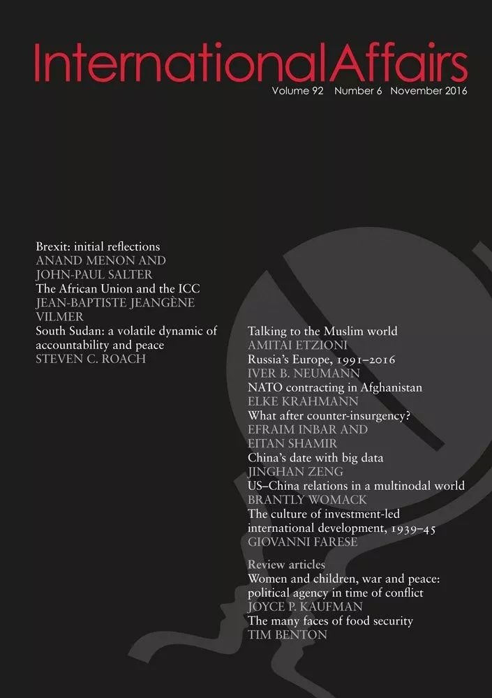
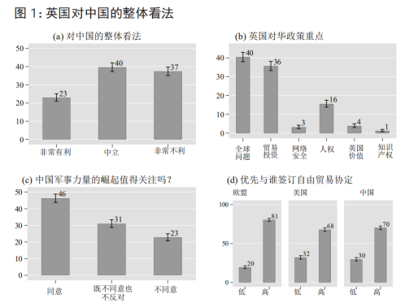
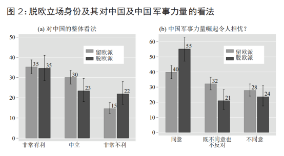
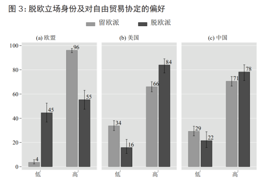
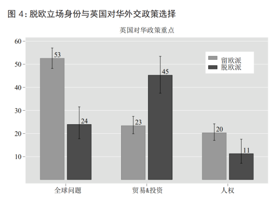
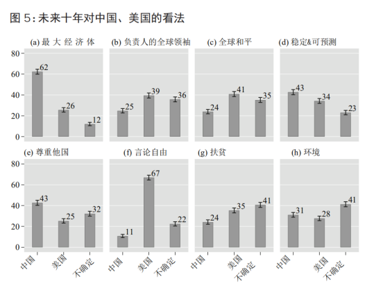
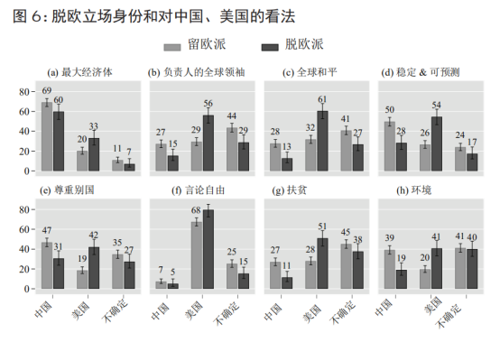

收录于合集

作品简介
【作者】 赵为民（Wilfred M. Chow），香港大学政治与公共行政学系助理教授。主要研究领域包括威权统治下的领导变革和外交政策；民主化和联盟形成；经济焦虑和政治两极分化。
韩恩泽（Enze Han），香港大学政治与公共行政学系副教授。主要研究领域包括中国的民族政治、中国与东南亚，特别是缅甸和泰国的关系以及中缅泰边境地区的国家形成政治。
李晓隽（Xiaojun Li），不列颠哥伦比亚大学助理教授。之前和正在进行的研究大体上可以分为三个项目：（1）国内政治对对外经济安全政策的过程和内容的影响（2）全球供应链对贸易和投资的影响（3）发展中国家和后共产主义国家贸易自由化的政治经济学研究。
【 编译】 缪高意(国政学人编译员，中国社会科学院大学)
【校对】 胡贺
【审核 】 丁伟航
【排版】 李佳霖
【 来源 】 Chow, Wilfred M., Enze Han, and Xiaojun Li. “Brexit identities and British public opinion on China.” International Affairs 95.6 (2019): 1369-1387.
原文观点不代表本平台观点。
期刊介绍

《国际事务》是国际关系领域的一流学术期刊，也是多学科综合性学术期刊。本刊于1992年由伦敦皇家国际事务研究所查塔姆学院(Chatham House)创立，内容来源广泛，力图囊括业内专家、学术新秀对重点、热点问题的最新思考。期刊影响因子为3.748，在91种国际关系类刊物中位列第5名。
脱欧立场身 份与英国对华民意
Brexit identities and British public opinion on China
内容提要
众多研究都探讨了民意在英国外交政策决策过程中的重要性，集中体现在英国与美国、欧盟关系研究方面。但少有针对英国对国际体系中其他主要国家（如中国等新兴大国）外交政策的民意研究。我们在脱欧公投之后开展民意调查，以弥合这一知识鸿沟。我们的研究结果表明，对于中国的快速发展和在国际舞台上发挥日益重要的作用，英国公众是有焦虑感的，但对于接下来的双边关系应该如何管控也有着务实的看法。更重要的是，脱欧立场身份不同的英国公众，其民意也呈现出明显反差的两极。那些强烈认同脱欧的人（以对欧盟的厌恶及对移民的反感来衡量）更有可能对中国的全球领导地位持有非正面的看法，更加深了其会构成军事威胁的怀疑。相比之下，那些支持留欧的人（相信留在欧盟内部并拥有更多的移民对英国来说更好）更倾向于与中国更密切地接触，对中国在国际社会/全球共同体中的地位有更积极的整体看法。
文章导读
一、 引言 ****
公众对外交事务的看法，对于理解决策者制定外交政策至关重要。此外，有证据表明，公众和决策者一样，都清楚自己与外交政策的直接或间接关系，以及外交政策对政治领导人选举前景的相应影响。如果外交政策选择与民意出现巨大分歧，公众对在任领导人的认可度就会下降，这会直接影响他们的选举前景。在英国，外交政策选择与公众偏好的一致性对于英国政府执行政策的能力和合法性至关重要。
鉴于公众在外交决策中的作用，了解公众对华看法对于决策者至关重要。但令人惊讶的是，尽管有大量针对中国崛起对国际和地区秩序影响的学术研究，但就英国对华外交政策的民意研究却非常缺乏。本文在脱欧公投之后开展民意调查，以弥合这一知识鸿沟。
本文的结构如下。首先，我们回顾了有关英国脱欧背景下关于中英关系的现有文献。然后，我们研究国际关系文献是如何将“身份”（identity）作为解释变量的。在这里，我们讨论现有文献如何解释脱欧立场身份在塑造英国外交政策选择中的作用。文章接着概述了研究方法和研究设计，详细介绍了实证研究发现，讨论了脱欧立场身份对中英关系未来的影响。
二、 英国脱欧背景下的中英关系 ****
现有的关于“中国崛起”和 “China threat” theory 的文献具有鲜明的以美国为中心的倾向。虽然有许多反思美国霸权因国内问题而衰落的研究，但更多的研究聚焦于中国崛起对世界的变化，尤其是对美国霸权以及美国所维护的国际“自由”秩序的挑战。然而，许多西方国家并不一定认同美国对中国的看法。正如许多权威人士声称，欧洲并未参与到亚洲正在出现的地缘政治斗争中，欧洲也没有表现出任何参与双方之间全球权力斗争的兴趣。
以英国为例，1949年中华人民共和国成立后，伦敦“守住大门”，与北京保持商业关系，而不是采取华盛顿推行的强硬禁运措施。1997年香港移交中国后，改善双边关系的主要障碍被清除了。此时，英国奉行“经济接触优先”（‘economic engagement first’）的政策，将中国置于全球经济之中。在卡梅伦执政期间，2015年习近平访问伦敦，中英关系进入“黄金时代”的“新阶段”。在特蕾莎梅取代卡梅伦担任首相后，中英“黄金时期”仍在继续。但是，随着英国政府卷入复杂的脱欧谈判，其几乎不再有注意力和精力继续保持前政府与中国的政策势头。同时，伦敦政治重新洗牌，脱欧后的前景不明朗，英国作为中国经济国际化平台的价值也在减弱。如果没有进入欧盟单一市场的机会，英国将需要与作为世界第二大经济体的中国达成一项有利的贸易协定。但目前，结果如何，难以确定。
三、 脱欧立场身份与英国外交政策
长期以来，学者们认为，英国的外交政策决定取决于国家对自身及其在世界上的作用的看法变化。明确的“国家角色概念，以及每种立场的角色表现”可以提供关于英国身份强有力的叙述，并获得公众对英国外交政策的支持。事实上，英国的自我身份问题在有关英国与美国和欧盟关系的著作中，以及在有关英联邦和英国帝国历史的著作中都有突出的表现。英国人所固有的主体间性的话语权，从根本上塑造了英国精英以及更广泛的社会如何看待英国在国际体系中的合法地位。
要解释人们为什么投票退出欧盟，就必须考虑英国的政治、文化独特性，以及英国作为欧盟成员国的经历和对欧盟的看法。然而，这些经历和认知并不是统一的，其多样性反映了当代英国社会内部的深刻分裂。“留欧派”和“脱欧派”之间的分歧表明，关于英国在国际体系中的合适地位问题上，国内没有明确的共识。英国应该继续成为欧盟的一部分，还是应该独立并寻求恢复过去的荣耀，还是应该寻求与美国建立更紧密的关系？
整个脱欧辩论揭示了英国，或更确切地说，英语社会中一股强大的社会力量。这股社会力量由恢复英国世界霸主地位的帝国组成，渴求并支持“一个与世隔绝的，波威利式的岛国从‘全球化’世界撤退的叙述”。对于许多学者来说，英国的社会分歧不再被描述为沿着传统的阶级路线，或在党派之间下降；相反，英国民族主义成为脱欧的推动力。事实上，强有力的英国脱欧叙述，即英国历史上的荣耀和当前作为欧盟成员国地位的下降，是英国民族主义者投票支持英国退出欧盟的一个重要理由。
最近的研究表明，“留欧派”和“脱欧派”具有强烈的情感依恋。事实上，“留欧派”和“脱欧派”身份不仅在英国脱欧辩论中，而且在其他更广泛的外交政策问题上，已经取代了党派隶属关系的地位。“留欧派”和“脱欧派”对中国的看法是否有所不同？如果有的话，这种分歧是否也适用于他们对国际舞台上中美关系的看法？回答这些问题将阐明脱欧认同如何塑造公众对中国的看法，以及英国政府应根据这些公众情绪采取何种策略来对待中国的快速发展。
四、 研究设计 ****
为了探讨上述问题，我们设计了一个由三个主要部分组成的民意调查。
第一部分是与受访者脱欧身份有关的问题。我们首先询问受访者是同意还是不同意“成为欧盟成员国会破坏英国的独特身份”这一说法，使用从“强烈同意”到“强烈不同意”的李克特五级量表来衡量。然后，我们询问受访者是否认为“应允许增加，减少或保持与现在相同数量的外来移民”。
第二部分是有关中英关系的五个问题。第一个问题询问受访者对中国的总体看法，使用从“非常有利”到“非常不利”的李克特五级量表来衡量。第二个问题询问受访者，他们认为英国政府应该优先考虑与中国关系中的哪些因素。具体选项是：“在气候变化，流行病和反恐等全球问题上合作”；“促进贸易和投资，包括谈判自由贸易协定或全面的经济伙伴关系”；“解决网络安全问题”；“推进中国的人权与民主改革”；“保护英国的价值观和制度不受中国日益增长的影响”；和“解决知识产权问题”。受访者只能选择这六个选项之一，也可以选择“不知道”。第三个问题是询问受访者是否同意“中国在未来十年不断增强的军事和国防能力对英国构成严重关切”的说法，使用从“绝对是”到“绝对不是”的李克特五级量表来衡量。第四个问题与英国的贸易关系有关。具体来说，我们问受访者：“如果英国要与欧盟、美国和中国达成自由贸易协定，你对与下列国家和地区集团建立贸易关系的优先顺序有何看法？答案是‘极其重要’、‘非常重要’、‘中等重要’、‘稍微重要’和‘根本不重要’”最后一个问题涉及中美之间的竞争，是在一个前瞻性的框架内提出的：在未来十年，在中美竞争的背景下，你认为哪个国家会……
1.成为最大的经济强国？
2.更负责任的全球领导者？
3.为维护全球和平做得更多？
4.更稳定和可预测？
5.对全世界的人更尊重？
6.更加致力于言论和表达自由？
7.为他们国家最贫穷的人做更多的事？
8.在应对气候变化和环境问题方面做得更多？
对于这八个子问题，受访者可以选择“中国”、“美国”或“不知道”。
调查的最后一部分包括一系列关于年龄、性别、出生地和居住地、婚姻状况、种族、教育、就业和收入的标准社会人口问题。我们还询问了被调查者的政党关系、工会成员和国家政治新闻曝光情况。
我们利用英国的一个众包平台实施了这项调查，受访者是从该平台的在线主题库中随机抽取的。调查于2018年11月15日至19日进行，共收到1600份回复。
五、 结果 ****






六、 结 论 ****
我们的调查研究有助于了解英国公众对未来的展望，其中有两个重要的发现值得强调。首先，英国公众通常对中国没有正面的看法。然而，这些负面观点主要源于中国军力上升相关的安全担忧，而非被视为英国对华政策优先考虑的经贸问题。第二，虽然英国仍然认为美国是更负责任的全球领导者和全球和平的捍卫者，但他们对中国作为最大的经济大国和一个更稳定、更可预测的国家更有信心。此外，我们的研究中还有一个独特的发现，即脱欧立场身份在多大程度上分裂了英国公众的看法：英国社会中的“脱欧派”和“留欧派”的分裂在我们调查的几乎所有问题的回答中都产生了尖锐的二分倾向。这表明，政策制定者和研究人员在考虑未来对华政策时需要牢记脱欧立场身份问题；如上所示，脱欧认同比传统变量（如党派）更能预测民意的分化。在这方面，我们的研究结果支持了最近的报道，即党派隶属关系作为政治认同的来源已在衰落，英国脱欧的出现则是政治分裂的新场所。
鉴于英国社会各政党及其支持基础的不断改组，英国脱欧立场身份将对英国外交政策的方向选择产生深远的影响，特别是随着中美在全球舞台上的竞争加剧。到目前为止，我们看到伦敦正在努力巩固与华盛顿的“特殊关系”，同时也在重建自己的地位，以回应新兴崛起的中国。然而，这样的均势行动可能不再可行，因为中美贸易战的升级给作为美国盟友的英国带来越来越大的压力，在从英国参与中国“一带一路”倡议，到英国是否应该禁止华为参与英国5G基础设施建设等问题上选择一方。在脱欧立场身份的驱动下，对于中美关系的公众意见分歧只会使这些选择变得愈加困难。
_ ** _ ** _ ** _ 本文由国政学人独家编译推荐**__
点“在看”给我一朵小黄花